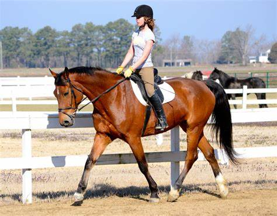

Wear sturdy hard-toed shoes or boots that will protect your feet if the horse or pony steps on them. Do not wear sandals, flip-flops, mesh athletic shoes or any thin shoes in a stable or around horses.
Get the horse's attention before approaching or touching and always approach the horse from the front.
Be calm and quiet. Sudden moves or loud noises can cause a horse to shy (jump sideways) or kick out.
Feed treats from buckets or tubs. Horses can very quickly become greedy and mistake fingers for carrots.
When tying, use a quick-release knot or panic snap so that if your horse gets scared and pulls it can quickly be freed. The feeling of being constrained can make a scared horse panic to the point of hurting itself or you.
The safest place to stand is beside your horse's shoulder where you can see each other, or about 10 or more feet away unless you are grooming, tacking up or otherwise interacting with your horse.
Never stand directly behind a horse. If you are grooming its tail, stand to one side and pull the tail gently towards you.
When cleaning a horse's hooves or putting on leg bandages, don't squat or kneel. Bend over so that if the horse moves you can get out of the way quickly.
When grooming, saddling up, or cleaning your horse's stall, tie your horse up. A loose horse in a barn can cause havoc. And don't leave a tied horse unattended. While mucking out, it’s safest if the horse is turned out or put in another stall
Never loop lead ropes, longe lines, or reins around your hands or any other body part. If your horse pulls away, you could be dragged. Don’t tie yourself to a horse in any way.
The safest way to lead a horse is with a halter and lead rope. Don't hook your fingers through the halter straps, rings, or the bit. If the horse pulls away, your fingers could be caught, injuring them or catching your hand so that you are dragged
When going through a doorway, make sure the door is wide open so the horse doesn't hit itself on it. This can startle the horse and result in you being trampled or dragged. If the door is narrow, go through first, make the horse wait, and then have it go through after you as you stand to the side.
Safety in the saddle

You must wear a hard hat/riding helmet (even if the guide or other riders are not wearing one). Your hat should meet current international safety standards.
When you are riding you are more than a passenger. Be aware of your horse, what you are doing and where you are riding at all times..
Always listen to the guide’s instructions and obey them. They are for your safety.
Never pass the guide, unless he/she has said you may do so. Stay at the pace set by the guide.
When riding in a group, be aware of the other riders. Never ride off until all riders are mounted and ready.
Do not allow your horse to get too close to the horse in front or you might get kicked.
Do not suddenly cut in front of other horses, especially when cantering and jumping, or pass them at speed.
As a courtesy to others, give verbal warnings for dangers (ie holes, low branches) and pass back messages clearly that the guide may have given.
If you feel unsafe with the horse you have been provided with you must tell the guide at the earliest opportunity.
Horses can be startled by sudden movements. Ensure saddle bags and coats are securely tied onto the saddle. Don’t throw things such as hats, coats and cameras to or from a horse. Always dismount to remove or put on coats and jumpers etc.
Horse riding is a physical activity. The fitter you are, the less tired you will become
If you are taking photographs or filming from horseback, always keep one hand on the reins. Taking photographs or filming when cantering can lead to accidents.